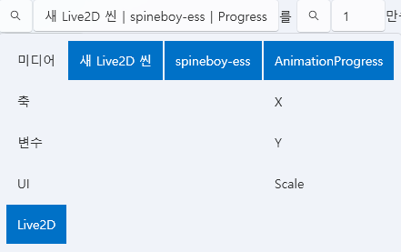

Live2D 标签页¶
Live2D 标签页用于构建 角色场景 (Scene)，
在其中放置 Spine 模型并设置动画。
所有 Live2D 资源都会 自动保存到项目内部 (Asset/Live2D/)，
不提供外部引用选项。
1. 基本界面¶

| 组件 | 说明 |
|---|---|
| ① 导入 | 载入 Live2D 场景 (.live2d) 文件。 |
| ② 新建 | 创建新的 Live2D 场景。 |
| ③ 编辑 ✏️ | 打开所选场景的详细编辑窗口。 |
| ④ 删除 🗑️ | 从项目中删除所选场景。 |
| ⑤ 打开文件夹 📂 | 直接打开 Asset/Live2D/ 文件夹。 |
💡 提示：
Live2D 场景只能在项目内部管理，
不支持外部引用或导出功能。
2. Live2D 场景编辑器¶

Live2D 编辑器是一个独立的界面，
可以在同一画面中放置多个 Spine 对象来构建角色演出场景。
🎛️ 顶部面板¶
| 项目 | 说明 |
|---|---|
| 名称 | 设置当前编辑中的场景名称。 |
| 宽度 / 高度 | 设置场景分辨率（例如 1920x1080）。 |
| 场景预览区域 | 可视化地放置 Spine 对象及背景。 |
| 对象列表（右侧面板） | 显示场景中包含的 Spine 对象列表。 |
🧩 Spine 对象管理¶
Live2D 场景中可以添加多个 Spine 对象。
每个对象都拥有独立的位置、缩放、动画和皮肤设置。
| 项目 | 说明 |
|---|---|
| 名称 | Spine 对象的名称。 |
| StartX / StartY | 设置场景内坐标（以像素为单位）。 |
| Scale | 调整角色大小。 |
| StartAnimation | 指定初始播放的动画（例如 idle, aim, walk）。 |
| Skin | 选择 Spine 模型外观皮肤。 |
| Loop | 是否循环播放动画。 |
| AutoPlay | 场景加载时是否自动开始播放动画。 |
💡 提示：
你可以在预览画面中通过 拖拽 直接调整对象位置，
同时放置多个角色来构建完整场景。
➕ 添加与删除对象¶
| 操作 | 说明 |
|---|---|
| 添加(+) 按钮 | 向场景中添加新的 Spine 对象。 |
| 删除(🗑️ 按钮) | 从场景中移除选中的 Spine 对象。 |
3. 轨道与脚本联动¶
Live2D 场景不仅能与时间轴联动，
还可与 脚本系统 直接连接，
从而在特定事件或条件下实时控制 动画、位置、缩放、进度 等。
🎞️ 时间轴联动¶
Live2D 场景可放置在时间轴轨道中，
与音频、事件、UI 等资源在时间轴上同步。
| 功能 | 说明 |
|---|---|
| 拖拽添加 | 将 Live2D 场景拖动到时间轴上进行布局。 |
| 条件编辑 | 设置满足特定条件时才显示该场景。 |
| 时间调整 | 直接指定场景的显示区间（开始/结束时间）。 |
💡 示例：
- 在特定音频段显示角色动作
- 在 UI 选择后触发表情变化
- 在高潮事件中自动播放特效动画
⚙️ 脚本联动¶
Live2D 对象可在脚本中通过变量进行直接控制。
打开变量设置窗口后，将显示如下结构：

| 项目 | 说明 |
|---|---|
| 选择 Live2D 场景 | 指定要控制的场景。 |
| 选择 Spine 对象 | 选择场景中要操作的对象。 |
| 选择属性 | 指定要修改的变量。 |
📊 可控制的主要变量¶
| 变量 | 说明 |
|---|---|
| AnimationProgress | 当前动画的进度 (0.0~1.0)，用于时间控制。 |
| X / Y | 更改对象的坐标。 |
| Scale | 调整角色大小。 |
💡 提示：
在脚本中实时修改 Live2D 变量，
可以在动画播放过程中自然地改变角色位置、大小、表情等。
🧩 示例脚本¶

🎯 结果：
执行上述脚本后，角色的位置、缩放与动画进度
将实时变化，与时间轴完美同步。
🔗 触发器联动示例¶
| 情境 | 触发行为 |
|---|---|
| 点击按钮时 | 将 AnimationProgress 设为 1，使动画立即结束。 |
| 事件发生时 | 将 Scale 从 1.0 改为 1.5，呈现放大效果。 |
| 基于计时器 | 逐步修改 Y 值，使角色向上移动。 |
💡 提示：
Live2D 变量可与 UI、音频、Stroke 事件相同方式访问，
并可通过 PlayData 脚本系统 实现全局统一控制。
🎬 Spine 控制脚本¶
通过脚本可直接控制 Live2D 场景中的 Spine 对象，
实现 动画播放 与 皮肤更换。
🕹️ Spine 动画播放¶

此脚本可在任意时间触发指定 Spine 对象的动画播放。
| 项目 | 说明 |
|---|---|
| 选择 Live2D 场景 | 指定要控制的场景。 |
| 选择 Spine 对象 | 指定要播放的模型。 |
| 动画名称 | 输入要播放的动画 (idle, attack, death 等)。 |
| 状态 | 设置动画结束后的行为，如“停止”、“循环”、“播放下一个动画”。 |
| 混合播放模式 | 是否与其他动画叠加播放 (Blend)。 |
| 启用/禁用 | 控制动画是否激活或暂停。 |
💡 应用示例：
- 在台词播放期间触发talk动作
- 事件完成后切换到happy动作
- 高潮场景播放death动画
🎨 Spine 皮肤更换¶

可切换 Spine 角色的皮肤，以改变服装、表情或装备。
| 项目 | 说明 |
|---|---|
| 选择 Live2D 场景 | 指定要控制的场景。 |
| 选择 Spine 对象 | 指定要更换皮肤的模型。 |
| 皮肤名称 | 选择要应用的皮肤 (default, costume1, damaged 等)。 |
💡 应用示例：
- 随剧情进展切换服装 (default→battle)
- 触发受伤事件切换到damaged状态
- 根据选项结果显示不同角色外观
⚙️ 额外提示：
将 Spine 动画控制脚本与 Live2D 变量控制脚本结合使用，
可轻松实现“动作 + 移动 + 缩放”等复杂动态效果。
4. 文件结构¶
| 项目 | 路径 |
|---|---|
| 场景数据 | Asset/Live2D/SceneName.live2D |
| Live2D 模型文件 | Asset/Live2DModel/ |
| Spine 模型文件 | Asset/SpineModel/ |
| 纹理 / 动画数据 | 保持 Spine 模型文件夹原有结构 |
| 预览缓存 | Asset/Live2D/ |
⚙️ 注意：
Live2D 场景仅在项目内部使用，
如果修改路径或移出项目文件夹，可能导致加载失败。